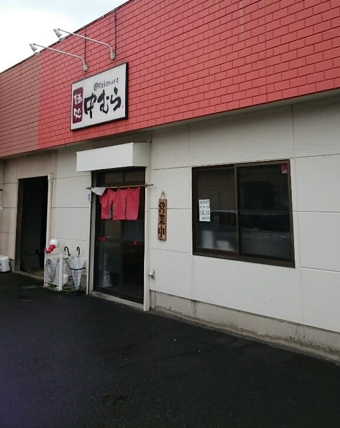
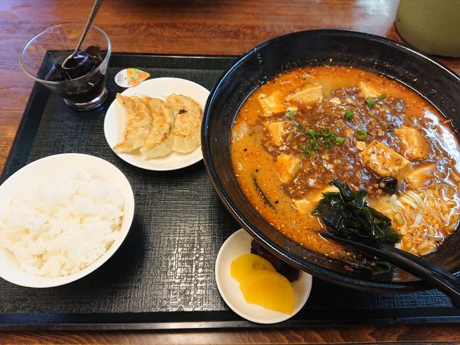
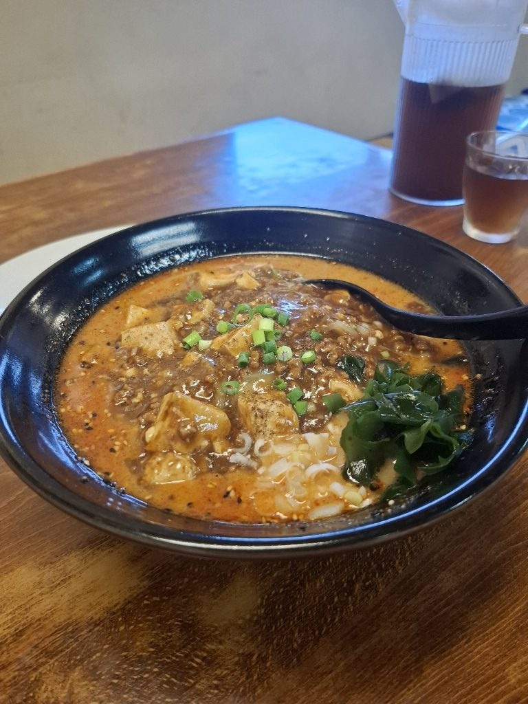
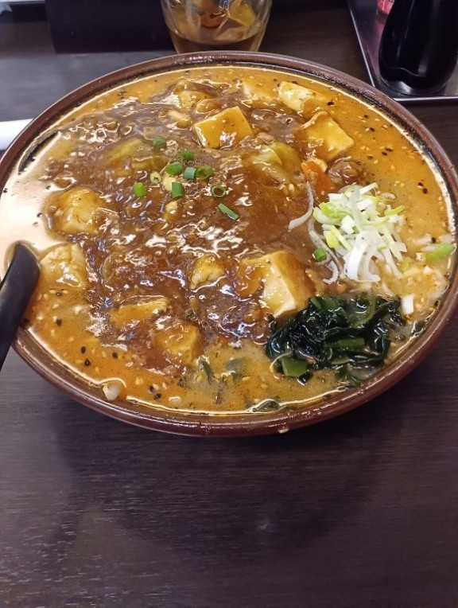
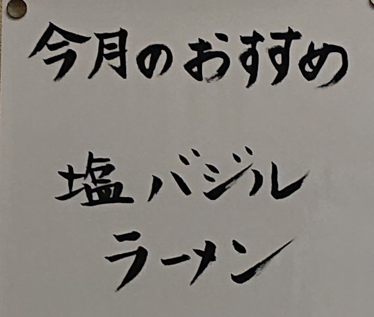
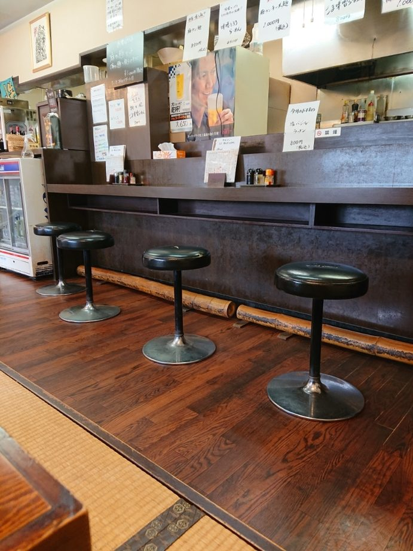
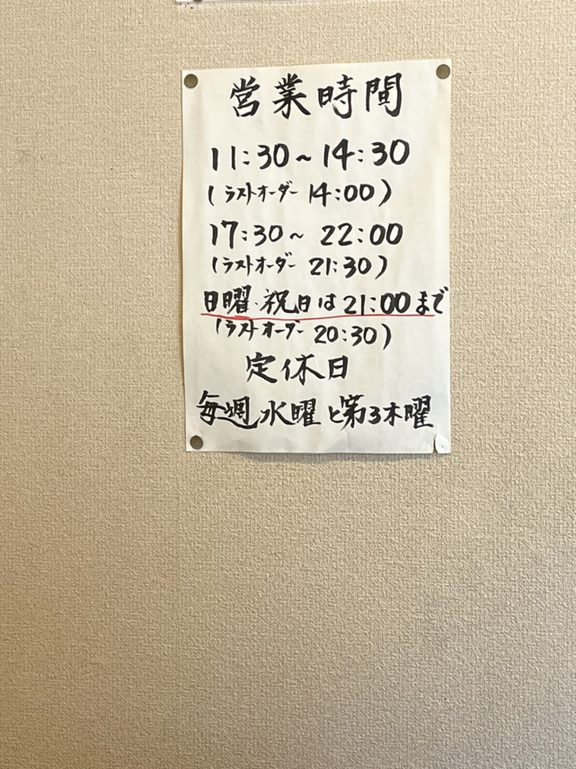
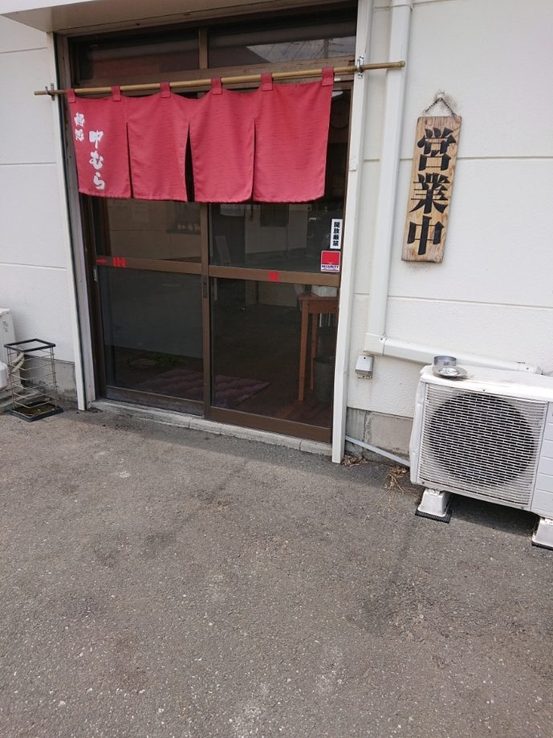

茨城県古河市中田
品数は百を超える、町のらーめん屋。
茨城県古河市中田・麺処 中むらでございます。今日もひと鍋ずつ作ってお出しします。
昼 11:30–14:30／夜 17:30–22:00 水曜・第三木曜 定休

塩タンメンを一杯、きちんと仕上げます。その上から、熱い麻婆餡を掛けます。
餡が野菜の山を覆って、止まる。ここからが、麻タンめんでございます。
餡の下に、タンメンが隠れております。れんげで崩しながらお召し上がりくださいませ。辛口でございます。
お品書きの中で、赤い字で書いているのは「店長おススメ」のこの章だけでございます。
当店の一番人気でございます。初めてお越しの方には、まずこの一杯をおすすめしております。餃子と半ライスを付けた麻タン麺セットもご用意しております。平日はデザートをお付けします。



月替わりで、その月だけの一杯を作っております。
春はしおバジルらーめん、初夏はざる中華、夏は冷やしねぎ中華や冷やし担々麺——季節ごとに仕込みを変えてお出ししております。その月の一杯は、Instagram（@nakamura_ramen_1007）でお知らせしております。

らーめんは、醤油・塩・味噌からお選びいただけます。
ネギ、チャーシュー、バター、コーン——お好みで重ねてお選びくださいませ。ごま味噌の担々風もご用意しております。
カウンターのお席と、畳の小上がりをご用意しております。
お一人さまはカウンターへ、ご家族やお連れさまは小上がりへどうぞ。夜は一品を肴に、ゆっくり一杯やっていただけます。

「麻タンメンと、味噌とろろラーメンがお気に入りです♡ 他のお店では食べられないメニューです。」
「坦々麺が大好きな私の中でもトップ3に入るおいしさだった！！」
「ここのラーメンの味噌がとても好みです。美味しいのでおすすめします。」
「何度か通ってますがどれも美味しいです。今日は塩ネギラーメン！！」
「ごま味噌らーめん、味噌ネギらーめん、餃子を注文。ごま感がしっかりあり酸味のあるスープが麺によく絡んで美味しいです」
ご来店の前に、ご案内がございます。

お車でお越しいただけます。店の前に駐車場がございます。
赤いレンガの壁に白い看板、入口の臙脂の暖簾が目印でございます。道順は下の地図からお調べいただけます。

| 住所 | 〒306-0053 茨城県古河市中田1692-1 |
|---|---|
| 電話 | 0280-48-0533 |
| 営業時間 | 昼 11:30〜14:30（L.O.14:00）／夜 17:30〜22:00（L.O.21:30）（日曜・祝日の夜は 21:00 まで・L.O.20:30） |
| 定休日 | 毎週水曜日・第三木曜日 |
| 席 | カウンター・畳の小上がり |
| 駐車場 | 有り（店舗前） |
| お支払い | 現金のみ |
今日も暖簾を掛けて、お待ちしております。
麺処 中むら